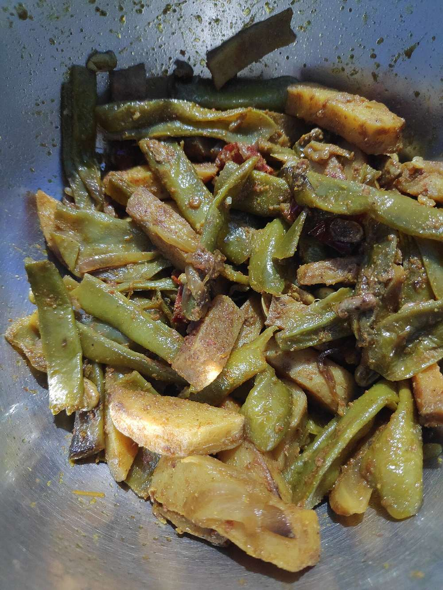

Matki Usal
sprouted moth beans in a thin dark gravy of onion, roasted coconut and goda masala

Contains: peanuts, mustard
Checked against the ingredient list for ten allergens: milk, egg, fish, crustaceans, tree nuts, peanuts, sesame, mustard, soy and gluten. Brands vary, so read the label on anything new to you.
Ingredients
Quantities for 4.
- 300g (about 2 cups), sprouted Sprouted Moth
- 2 medium, finely chopped Onion
- 8 cloves, crushed Garlic
- 3cm piece, grated Ginger
- 40g, grated and dry-roasted Dried Coconut
- 2 tsp Garam Masalastand-in for goda or kala masala; use either if you have it
- 2 tsp Chilli Powder
- 1 tsp Kashmiri Chilli
- 1 tsp Coriander Powder
- 1/2 tsp Turmeric
- 1 tsp Mustard Seeds
- 1/2 tsp Cumin Seeds
- 10 Curry Leaves
- 1/4 tsp Asafoetidause compounded-free hing to keep this gluten-free
- 1 tsp, grated Jaggeryoptional
- 2 tsp thick pulp Tamarindoptional
- 3 tbsp Groundnut Oil
- 500ml Water
- 4 tbsp, chopped Coriander Leavesoptional
- to taste Salt
Cookware
stovetop, pressure cooker
Before you start
- Sprouting matki takes two days: soak the beans 8 hours, drain, tie them in a damp cloth and leave in a warm place 24 to 36 hours until the tails are about 5mm.
- Dry-roast the grated dried coconut until deep brown and grind it with the onion, garlic and ginger before you light the pan.
- Rinse the sprouts and pick out any that have not opened.
Method
- Grind the roasted dried coconut with half the onion, the garlic and the ginger to a coarse paste with 3 tbsp water.
- Heat the oil, pop the mustard seeds, then add the cumin, curry leaves and hing.
- Add the remaining chopped onion and cook 6 minutes until golden at the edges.
- Stir in the coconut paste and fry 5 minutes over medium heat until it darkens and stops smelling raw.Keep scraping the base. Coconut paste catches fast.
- Add the chilli powder, kashmiri chilli, coriander powder, turmeric and goda masala and fry 1 minute.
- Tip in the sprouts, turn them through the masala and cook 3 minutes.
- Add the water, salt, jaggery and tamarind, bring to a boil, then cover and simmer 18 minutes until the beans are soft but still hold their shape.Pressure cooking is faster but turns them to mush. Eighteen minutes open is worth the time.
- Uncover and check the gravy: it should be thin, dark and slick with red oil on top. Loosen with hot water if it has tightened.
- Finish with coriander and serve with bhakri, or with pav and chopped onion.
Storage
Keeps 3 days refrigerated and thickens as the beans drink the gravy; loosen with hot water when reheating. Freezes 1 month.
Nutrition Good estimate
Low protein: 5 g a serving, 8% of the calories
| Per serving180 g | Per 100 g | |
|---|---|---|
| Calories | 238 kcal | 133 kcal |
| Protein | 5.0 g | 3 g |
| Carbohydrate | 19.5 g | 11 g |
| of which sugars | 8.6 g | 5 g |
| Fibre | 6.0 g | 3 g |
| Fat | 17.7 g | 10 g |
| of which saturated | 7.6 g | 4 g |
| of which unsaturated | 9.0 g | 5 g |
Worked out from the listed quantities; most of the ingredient list could be weighed. Some ingredients have no exact match in the nutrient database and use the nearest equivalent: asafoetida, curry leaves, garam masala, jaggery, sprouted moth. Estimated from raw ingredients using USDA FoodData Central. Cooking changes are not modelled, and added salt is excluded, so sodium is not given.
Written and checked against sources, not cooked in a test kitchen. Times, yields, allergens and nutrition are worked out rather than measured, so use your own judgement on doneness and on storing. More in About.